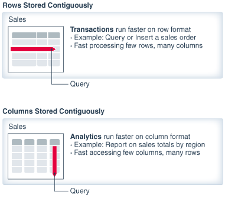
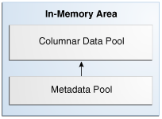
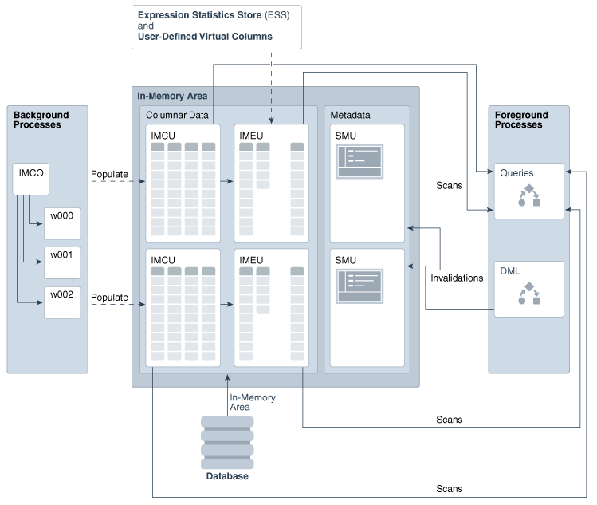
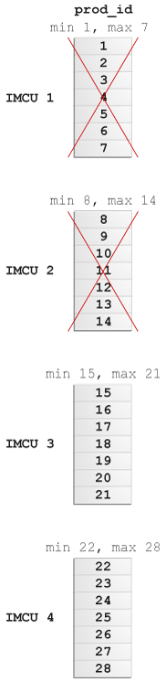
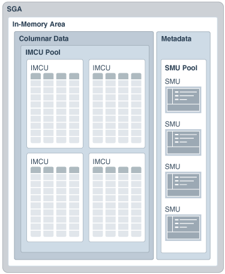

2 In-Memory Column Store Architecture
The In-Memory Column Store (IM column store) stores tables and partitions in memory using a columnar format optimized for rapid scans. Oracle Database uses a sophisticated architecture to manage data in columnar and row formats simultaneously.
This chapter contains the following topics:
- Dual-Format: Column and Row
When you enable an IM column store, the SGA manages data in separate locations: the In-Memory Area and the database buffer cache. - In-Memory Storage Units
The IM column store manages both data and metadata in optimized storage units, not in traditional Oracle data blocks. - Expression Statistics Store (ESS)
The Expression Statistics Store (ESS) is a repository maintained by the optimizer to store statistics about expression evaluation. The ESS resides in the SGA and also persists on disk. - In-Memory Process Architecture
In response to queries and DML, server processes scan columnar data and update SMU metadata. Background processes populate row data from disk into the IM column store. - CPU Architecture: SIMD Vector Processing
For data that does need to be scanned in the IM column store, the database uses SIMD (single instruction, multiple data) vector processing.
2.1 Dual-Format: Column and Row
When you enable an IM column store, the SGA manages data in separate locations: the In-Memory Area and the database buffer cache.
The IM column store encodes data in a columnar format: each column is a separate structure. The columns are stored contiguously, which optimizes them for analytic queries. The database buffer cache can modify objects that are also populated in the IM column store. However, the buffer cache stores data in the traditional row format. Data blocks store the rows contiguously, optimizing them for transactions.
The following figure illustrates the difference between row-based storage and columnar storage.
Figure 2-1 Columnar and Row-Based Storage
Description of "Figure 2-1 Columnar and Row-Based Storage"
This section creates the following topics:
- Columnar Data in the In-Memory Area
The In-Memory Area is an optional SGA component that contains the IM column store. - Row Data in the Database Buffer Cache
The database buffer cache stores and processes data blocks in the same way whether the IM column store is enabled or disabled. Buffer I/O and buffer pools function exactly the same.
2.1.1 Columnar Data in the In-Memory Area
The In-Memory Area is an optional SGA component that contains the IM column store.
This section contains the following topics:
- Size of the In-Memory Area
The In-Memory Area is controlled by theINMEMORY_SIZEinitialization parameter. By default, the size of the In-Memory Area is 0, which means the IM column store is disabled. - Memory Pools in the In-Memory Area
The In-Memory Area is divided into subpools for columnar data and metadata.
2.1.1.1 Size of the In-Memory Area
The In-Memory Area is controlled by the INMEMORY_SIZE initialization parameter. By default, the size of the In-Memory Area is 0, which means the IM column store is disabled.
To enable the IM column store, set the In-Memory Area to at least 100 MB. The size is shown in V$SGA.
The In-Memory Area is subtracted from the SGA_TARGET initialization parameter setting. For example, if you set SGA_TARGET to 10 GB, and if you set the INMEMORY_SIZE to 4 GB, then 40% of the SGA_TARGET setting is allocated to the In-Memory Area. The following graphic illustrates the relationship.
Unlike the other components of the SGA, including the buffer cache and the shared pool, the In-Memory Area size is not controlled by automatic memory management. The database does not automatically shrink the In-Memory Area when the buffer cache or shared pool requires more memory, or increase the In-Memory Area when it runs out of space.
Starting in Oracle Database 12c Release 2 (12.2), you can dynamically increase INMEMORY_SIZE by using the ALTER SYSTEM statement. The database allocates increased memory when the following conditions are met:
-
Free memory is available in the SGA.
-
The new size for
INMEMORY_SIZEis at least 128 MB greater than the current setting.Note:
You cannot use
ALTER SYSTEMto reduceINMEMORY_SIZE.
The V$INMEMORY_AREA and V$SGA views immediately reflect the change.
See Also:
-
Oracle Database Administrator’s Guide to learn more about automatic memory management
-
Oracle Database Reference to learn about
INMEMORY_SIZE,V$INMEMORY_AREA, andV$SGA
2.1.1.2 Memory Pools in the In-Memory Area
The In-Memory Area is divided into subpools for columnar data and metadata.
The In-Memory area is subdivided into the following subpools:
-
This subpool stores the IMCUs, which contain the columnar data. The
V$INMEMORY_AREA.POOLcolumn identifies this subpool as1MB POOL, as shown in Example 2-1. -
The metadata pool
This subpool stores metadata about the objects that reside in the IM column store. The
V$INMEMORY_AREA.POOLcolumn identifies this subpool as64KB POOL, as shown in Example 2-1.
Figure 2-3 Subpools in the In-Memory Area
Description of "Figure 2-3 Subpools in the In-Memory Area"
The database determines the relative size of the two subpools using internal heuristics. The database allocates the majority of space in the In-Memory Area to the columnar data pool (1 MB pool).
Note:
Oracle Database automatically determines the subpool sizes. You cannot change the space allocations.
Example 2-1 V$INMEMORY_AREA View
This example queries the V$INMEMORY_AREA view to determine the amount of available memory in each subpool (sample output included):
COL POOL FORMAT a9
COL POPULATE_STATUS FORMAT a15
SSELECT POOL, TRUNC(ALLOC_BYTES/(1024*1024*1024),2) "ALLOC_GB",
TRUNC(USED_BYTES/(1024*1024*1024),2) "USED_GB",
POPULATE_STATUS
FROM V$INMEMORY_AREA;
POOL ALLOC_GB USED_GB POPULATE_STATUS
--------- ---------- ---------- ---------------
1MB POOL 7.99 0 DONE
64KB POOL 1.98 0 DONEThe current size of the In-Memory area is visible in V$SGA:
SELECT NAME, VALUE/(1024*1024*1024) "SIZE_IN_GB"
FROM V$SGA
WHERE NAME LIKE '%Mem%';
NAME SIZE_IN_GB
-------------------- ----------
In-Memory Area 10In this example, the memory allocated to the subpools is 9.97 GB, whereas the size of the In-Memory Area is 10 GB. The database uses a small percentage of memory for internal management structures.
2.1.2 Row Data in the Database Buffer Cache
The database buffer cache stores and processes data blocks in the same way whether the IM column store is enabled or disabled. Buffer I/O and buffer pools function exactly the same.
The IM column store enables data to be simultaneously populated in the SGA in both the traditional row format (the buffer cache) and the columnar format. The database transparently sends OLTP queries (such as primary key lookups) to the buffer cache, and analytic and reporting queries to the IM column store. When fetching data, Oracle Database can also read data from both memory areas within the same query.
Note:
In the execution plan, the operation TABLE ACCESS IN MEMORY FULL indicates that some or all data is accessed in the IM column store.
The dual-format architecture does not double memory requirements. The buffer cache is optimized to run with a much smaller size than the size of the database.
The following figure shows a sample IM column store. The database stores the sh.sales table on disk in traditional row format. The SGA stores the data in columnar format in the IM column store, and in row format in the database buffer cache.
Every on-disk data format for permanent, heap-organized tables is supported by the IM column store. The columnar format does not affect the format of data stored in data files or in the buffer cache, nor does it affect undo data and online redo logging.
The database processes DML modifications in the same way, regardless of whether the IM column store is enabled, by updating the buffer cache, online redo log, and undo tablespace. However, the database uses an internal mechanism to track changes and ensure that the IM column store is consistent with the rest of the database. For example, if the sales table is populated in the IM column store, and if an application updates a row in sales, then the database automatically keeps the copy of the sales table in the IM column store transactionally consistent. A query that accesses the IM column store always returns the same results for a query that accesses the buffer cache.
See Also:
Oracle Database Concepts to learn more about the database buffer cache
2.2 In-Memory Storage Units
The IM column store manages both data and metadata in optimized storage units, not in traditional Oracle data blocks.
Oracle Database maintains the storage units in the In-Memory Area. The following graphic gives an overview of the In-Memory Area and the database processes that interact with it. The remaining chapter describes the various memory components.
Figure 2-5 IM Column Store: Memory and Process Architecture
Description of "Figure 2-5 IM Column Store: Memory and Process Architecture"
This section contains the following topics:
- In-Memory Compression Units (IMCUs)
An In-Memory Compression Unit (IMCU) is a compressed, read-only storage unit that contains data for one or more columns. - Snapshot Metadata Units (SMUs)
A Snapshot Metadata Unit (SMU) contains metadata and transactional information for an associated IMCU. - In-Memory Expression Units (IMEUs)
An In-Memory Expression Unit (IMEU) is a storage container for materialized In-Memory Expressions (IM expressions) and user-defined virtual columns.
2.2.1 In-Memory Compression Units (IMCUs)
An In-Memory Compression Unit (IMCU) is a compressed, read-only storage unit that contains data for one or more columns.
An IMCU is analogous to a tablespace extent. An IMCU has two parts: a set of Column Compression Units (CUs), and a header that contains metadata such as the IM storage index.
This section contains the following topics:
- IMCUs and Schema Objects
The IM column store stores data for a single object (table, partition, materialized view) in a set of IMCUs. An IMCU stores columnar data for one and only one object. - Column Compression Units (CUs)
A Column Compression Unit (CU) is contiguous storage for a single column in an IMCU. Every IMCU has one or more CUs. - In-Memory Storage Indexes
Every IMCU header automatically creates and manages In-Memory Storage Indexes (IM storage indexes) for its CUs. An IM storage index stores the minimum and maximum for all columns within the IMCU.
2.2.1.1 IMCUs and Schema Objects
The IM column store stores data for a single object (table, partition, materialized view) in a set of IMCUs. An IMCU stores columnar data for one and only one object.
For an object specified as INMEMORY, every column listed in the INMEMORY clause is included in every IMCU. For example, the sh.sales table has 7 columns, as shown in Figure 2-6. The following DDL statement specifies the table as INMEMORY, which means that every IMCU for sales includes columnar data for these 7 columns:
ALTER TABLE sh.sales INMEMORY MEMCOMPRESS FOR QUERY LOW;To apply the INMEMORY attribute to a subset of columns in a segment, you must specify all columns as INMEMORY in one DDL statement, and then issue a second DDL statement to specify the NO INMEMORY attribute on the excluded columns. For example, the following statement specifies that 3 columns in sh.sales are NO INMEMORY, which means that the other 4 columns in the table retain their INMEMORY attribute:
ALTER TABLE sh.sales INMEMORY MEMCOMPRESS FOR QUERY LOW
NO INMEMORY (promo_id, quantity_sold, amount_sold);The following graphic represents three tables from the sh schema populated in the IM column store: customers, products, and sales. In this example, each table has a different number of columns specified INMEMORY. The IMCUs for each table include only data for the specified columns.
This section contains the following topics:
- In-Memory Compression
The IM column store uses special compression formats optimized for access speed rather than storage reduction. The columnar format enables queries to execute directly against the compressed columns. - IMCUs and Rows
Each IMCU contains all column values (including nulls) for a subset of rows in a table segment. A subset of rows is called a granule.
See Also:
Oracle Database SQL Language Reference to learn about the ALTER TABLE statement
2.2.1.1.1 In-Memory Compression
The IM column store uses special compression formats optimized for access speed rather than storage reduction. The columnar format enables queries to execute directly against the compressed columns.
Compression enables scanning and filtering operations to process a much smaller amount of data, which optimizes query performance. Oracle Database only decompresses data when it is required for the result set.
The compression applied in the IM column store is closely related to Hybrid Columnar Compression. Both technologies process column vectors. The primary difference is that the column vectors for the IM column store are optimized for SIMD vector processing, whereas the column vectors for Hybrid Columnar Compression are optimized for disk storage.
When you enable an object for population into the IM column store, you specify the type of compression in the INMEMORY clause: FOR DML, FOR QUERY (LOW or HIGH), FOR CAPACITY (LOW or HIGH), or NONE.
See Also:
-
Oracle Database Concepts to learn more about Hybrid Columnar Compression
2.2.1.1.2 IMCUs and Rows
Each IMCU contains all column values (including nulls) for a subset of rows in a table segment. A subset of rows is called a granule.
All IMCUs for a given segment contain approximately the same number of rows. Oracle Database determines the size of a granule automatically depending on data type, data format, and compression type. A higher compression level results in more rows in the IMCU.
A one-to-many mapping exists between an IMCU and a set of database blocks. As illustrated in Example 2-2, each IMCU stores the values for columns for a different set of blocks.
The columns in an IMCU are not sorted. Oracle Database populates them in the order that they are read from disk.
The number of rows in an IMCU dictates the amount of space an IMCU consumes. If the target number of rows causes an IMCU to grow beyond the amount of contiguous 1 MB extents available in the 1 MB pool, then the IMCU creates additional extents (pieces) to hold the remaining column CUs. An IMCU always allocates space in 1 MB increments.
Example 2-2 IMCUs and Row Subsets
In this simplified example, only the following 4 columns of the customers table have the INMEMORY attribute: cust_id, cust_first_name, cust_last_name, and cust_gender. Only 5 rows exist in the table, stored in 2 data blocks. Conceptually, the first data block stores its rows as follows:
82,Madeline,Li,F;37004,Abel,Embrey,M;1714,Hardy,Gentle,MThe second data block stores rows as follows:
100439,Uma,Campbell,F;3047,Lucia,Downey,FAssume IMCU 1 stores the data for the first data block. In this case, the cust_id column values for the 3 rows in this data block stores are stored “vertically” within a CU as follows:
82
37004
1714IMCU 2 stores the data from the second data block. The cust_id column values for these 2 rows are stored within a CU as follows:
100439
3047Because the cust_id value is the first value for each row in the data block, the cust_id column is in the first position within the IMCU. Columns always occupy the same position, so Oracle Database can reconstruct the rows by reading the IMCUs for a segment.
Related Topics
2.2.1.2 Column Compression Units (CUs)
A Column Compression Unit (CU) is contiguous storage for a single column in an IMCU. Every IMCU has one or more CUs.
This section contains the following topics:
- Structure of a CU
A CU is divided into a body and a header. - Local Dictionary
In a CU, the local dictionary has a list of distinct values and their corresponding dictionary codes.
2.2.1.2.1 Structure of a CU
A CU is divided into a body and a header.
The body of every CU stores the column values for the range of rows included in the IMCU. The header contains metadata about the values stored in the CU body, for example, the minimum and maximum value within the CU. It may also contain a local dictionary, which is a sorted list of the distinct values in that column and their corresponding dictionary codes.
The following figure shows an IMCU with 4 CUs for the sales table: prod_id, cust_id, time_id, and channel_id. Each CU stores the column values for the range of rows included in the IMCU.
The CUs store values in rowid order. For this reason, the database can answer queries by “stitching” the rows back together. For example, an application issues the following query:
SELECT cust_id, time_id, channel_id
FROM sales
WHERE prod_id =5;The database begins by scanning the prod_id column for entries with the value 5. Assume that the database finds 5 in position two in the prod_id column. The database now must find the corresponding cust_id, time_id, and channel_id for this row. Because the CUs store data in rowid order, the database can find the corresponding cust_id, time_id, and channel_id values in position 2 in those columns. Thus, to answer the query, the database must extract the values from position 2 in the cust_id, time_id, and channel_id columns, and then stitch the row back together to return it to the end user.
2.2.1.2.2 Local Dictionary
In a CU, the local dictionary has a list of distinct values and their corresponding dictionary codes.
The local dictionary stores the symbol contained in the column. The following figure illustrates how a CU stores a name column in a vehicles table.
In the preceding figure, the CU contains only 7 rows. Every distinct value in this CU, such as Cadillac or Audi, is assigned a different dictionary code, such as 2 for Cadillac and 0 for Audi. The CU stores the dictionary code rather than the original value.
Note:
When the database uses a common dictionary for a join group, the local dictionary contains references to the common dictionary rather than the symbols. For example, rather than storing the values Audi, BWM, and Cadillac for the vehicles.name column, the local dictionary stores dictionary codes such as 101, 220, and 66.
The CU header contains the minimum and maximum values for the column. In this example, the minimum value is Audi and the maximum value is Cadillac. The local dictionary stores the list of distinct values: Audi, BMW, and Cadillac. Their corresponding dictionary codes (0, 1, and 2) are implicit. The local dictionary for a CU in each IMCU is independent of the local dictionaries in other IMCUs.
If a query filters on Audi automobiles, then the database scans this IMCU for only 0 codes.
Related Topics
See Also:
2.2.1.3 In-Memory Storage Indexes
Every IMCU header automatically creates and manages In-Memory Storage Indexes (IM storage indexes) for its CUs. An IM storage index stores the minimum and maximum for all columns within the IMCU.
For example, sales is populated in the IM column store. Every IMCU for this table has all columns. The sales.prod_id column is stored in a separate CU within every IMCU. The IMCU header has the minimum and maximum values of each prod_id CU (and every other CU).
To eliminate unnecessary scans, the database can perform IMCU pruning based on SQL filter predicates. The database scans only the IMCUs that satisfy the query predicate, as shown in the WHERE prod_id > 14 AND prod_id < 29 example in the following graphic.
Figure 2-9 Storage Index for Columnar Data
Description of "Figure 2-9 Storage Index for Columnar Data"
2.2.2 Snapshot Metadata Units (SMUs)
A Snapshot Metadata Unit (SMU) contains metadata and transactional information for an associated IMCU.
This section contains the following topics:
- IMCUs and SMUs
The columnar pool of the In-Memory Area stores the actual data: IMCUs and IMEUs. The metadata pool in the In-Memory Area stores the SMUs. - Transaction Journal
Every SMU contains a transaction journal. The database uses the transaction journal to keep the IMCU transactionally consistent.
2.2.2.1 IMCUs and SMUs
The columnar pool of the In-Memory Area stores the actual data: IMCUs and IMEUs. The metadata pool in the In-Memory Area stores the SMUs.
Figure 2-10 IMCUs and SMUs
This figure shows IMCUs in the data pool, and SMUs in the metadata pool.
Description of "Figure 2-10 IMCUs and SMUs"
Every IMCU maps to a separate SMU. Thus, if the columnar data pool contains 100 IMCUs, then the metadata pool contains 100 SMUs. The SMUs store several types of metadata for their associated IMCUs, including the following:
-
Object numbers
-
Column numbers
-
Mapping information for rows
2.2.2.2 Transaction Journal
Every SMU contains a transaction journal. The database uses the transaction journal to keep the IMCU transactionally consistent.
The database uses the buffer cache to process DML, just as when the IM column store is not enabled. For example, an UPDATE statement might modify a row in an IMCU. In this case, the database adds the rowid for the modified row to the transaction journal and marks it stale as of the SCN of the DML statement. If a query needs to access the new version of the row, then the database obtains the row from the database buffer cache.
The database achieves read consistency by merging the contents of the column, transaction journal, and buffer cache. When the IMCU is refreshed during repopulation, queries can access the up-to-date row directly from the IMCU.
See Also:
"Optimizing Repopulation of the IM Column Store" for an in-depth discussion of how the IM column store maintains transactional consistency
2.2.3 In-Memory Expression Units (IMEUs)
An In-Memory Expression Unit (IMEU) is a storage container for materialized In-Memory Expressions (IM expressions) and user-defined virtual columns.
The database treats materialized expressions just like other columns in the IMCU. Conceptually, an IMEU is a logical extension of its parent IMCU. Just as an IMCU can contain multiple columns, an IMEU can contain multiple virtual columns.
Every IMEU maps to exactly one IMCU, mapping to the same row set. The IMEU contains expression results for the data contained in its associated IMCU. When the IMCU is populated, the associated IMEU is also populated.
A typical IM expression involves one or more columns, possibly with constants, and has a one-to-one mapping with the rows in the table. For example, an IMCU for an employees table contains rows 1–1000 for the column weekly_salary. For the rows stored in this IMCU, the IMEU calculates the automatically detected IM expression weekly_salary*52, and the user-defined virtual column quarterly_salary defined as weekly_salary*12. The 3rd row down in the IMCU maps to the 3rd row down in the IMEU.
The IMEU is a logical extension of the IMCUs of a particular segment. By default, the IMEU inherits the INMEMORY clause properties, including Oracle Real Application Clusters (Oracle RAC) properties such as DISTRIBUTE and DUPLICATE, from the base segment. You can selectively enable or disable virtual columns for storage in IMEUs. You can also specify compression levels for different columns.
Related Topics
2.3 Expression Statistics Store (ESS)
The Expression Statistics Store (ESS) is a repository maintained by the optimizer to store statistics about expression evaluation. The ESS resides in the SGA and also persists on disk.
When an IM column store is enabled, the database leverages the ESS for its In-Memory Expressions (IM expressions) feature. However, the ESS is independent of the IM column store. The ESS is a permanent component of the database and cannot be disabled.
The database uses the ESS to determine whether an expression is “hot” (frequently accessed), and thus a candidate for an IM expression. During a hard parse of a query, the ESS looks for active expressions in the SELECT list, WHERE clause, GROUP BY clause, and so on.
For each segment, the ESS maintains expression statistics such as the following:
-
Frequency of execution
-
Cost of evaluation
-
Timestamp evaluation
The optimizer assigns each expression a weighted score based on cost and the number of times it was evaluated. The values are approximate rather than exact. More active expressions have higher scores. The ESS maintains an internal list of the most frequently accessed expressions.
Control the behavior of IM expressions using the DBMS_INMEMORY_ADMIN package. For example, the IME_CAPTURE_EXPRESSIONS procedure prompts the database to identify and gradually populate the hottest expressions in the database. The IME_POPULATE_EXPRESSIONS procedure forces the database to populate the expressions immediately.
ESS information is stored in the data dictionary and exposed in the DBA_EXPRESSION_STATISTICS view. This view shows the metadata that the optimizer has collected in the ESS. IM expressions are exposed as system-generated virtual columns, prefixed by the string SYS_IME, in the DBA_IM_EXPRESSIONS view.
See Also:
-
Oracle Database SQL Tuning Guide to learn more about ESS
-
Oracle Database Reference to learn more about the
DBA_EXPRESSION_STATISTICSview -
Oracle Database PL/SQL Packages and Types Reference to learn more about the
DBMS_INMEMORY_ADMINpackage
2.4 In-Memory Process Architecture
In response to queries and DML, server processes scan columnar data and update SMU metadata. Background processes populate row data from disk into the IM column store.
This section contains the following topics:
- In-Memory Coordinator Process (IMCO)
The In-Memory Coordinator Process (IMCO) manages many tasks for the IM column store. Its primary task is to initiate background population and repopulation of columnar data. - Space Management Worker Processes (Wnnn)
Space Management Worker Processes (Wnnn) populate or repopulate data on behalf of IMCO.
2.4.1 In-Memory Coordinator Process (IMCO)
The In-Memory Coordinator Process (IMCO) manages many tasks for the IM column store. Its primary task is to initiate background population and repopulation of columnar data.
Population is a streaming mechanism, converting row data into columnar format, and then compressing it. IMCO automatically initiates population of INMEMORY objects with any priority other than NONE. When objects with priority NONE are accessed, IMCO populates them using Space Management Worker Process (Wnnn) processes.
The IMCO background process also initiates threshold-based repopulation of IM column store objects when they meet a staleness threshold. IMCO may instigate trickle repopulation for any IMCU in the IM column store that has stale entries but does not meet the staleness threshold.
Trickle repopulation occurs automatically in the background. The steps are as follows:
-
IMCO wakes up.
-
IMCO determines whether population tasks need to be performed, including whether any stale entries exist in an IMCU.
-
If IMCO finds stale entries, then it triggers a Space Management Worker Process to repopulate these entries in the IMCU.
-
IMCO sleeps for two minutes, and then returns to Step 1.
See Also:
-
Oracle Database Reference to learn more about background processes
2.4.2 Space Management Worker Processes (Wnnn)
Space Management Worker Processes (Wnnn) populate or repopulate data on behalf of IMCO.
During population, Wnnn processes are responsible for creating IMCUs, SMUs, and IMEUs. When creating IMEUs, the worker processes perform the following tasks:
-
Identify virtual columns for population
-
Create virtual column values
-
Compute values for each row, transform the data into columnar format, and compress it
-
Register the objects with the space layer
-
Associate the IMEUs with their corresponding IMCUs
Note:
During IMEU creation, parent IMCUs remain available for queries.
During repopulation, the Wnnn processes create new versions of the IMCUs based on the existing IMCUs and transactions journals, while temporarily retaining the old versions. This mechanism is called double buffering.
The database can quickly move IM expressions in and out of the IM column store. For example, if an IMCU was created without an IMEU, then the database can add an IMEU later without forcing the IMCU to undergo the full repopulation mechanism.
The INMEMORY_MAX_POPULATE_SERVERS initialization parameter controls the maximum number of worker processes that can be started for population. The INMEMORY_TRICKLE_REPOPULATE_PERCENT initialization parameter controls the maximum percentage of time that worker processes can perform trickle repopulation.
See Also:
-
Oracle Database Reference to learn more about background processes
2.5 CPU Architecture: SIMD Vector Processing
For data that does need to be scanned in the IM column store, the database uses SIMD (single instruction, multiple data) vector processing.
The IM column store maximizes the number of column entries that the CPU can load into the vector registers and evaluate. Instead of evaluating each entry in the column one at a time, the database evaluates a set of column values in a single CPU instruction. SIMD vector processing enables the database to scan billions of rows per second.
For example, an application issues a query to find the total number of orders in the sales table that use the promo_id value of 9999. The sales table resides in the IM column store. The query begins by scanning only the sales.promo_id column, as shown in the following diagram:
The CPU evaluates the data as follows:
-
Loads the first 8 values (the number varies depending on data type and compression mode) from the
promo_idcolumn into the SIMD register, and then compares them with the value 9999 in a single instruction -
Discards the entries.
-
Loads another 8 values into the SIMD register, and then continues in this way until it has evaluated all entries.